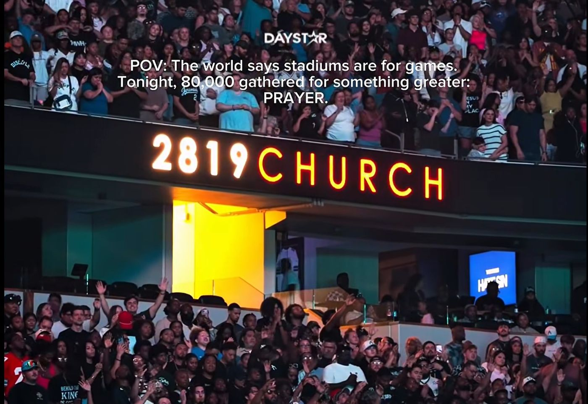
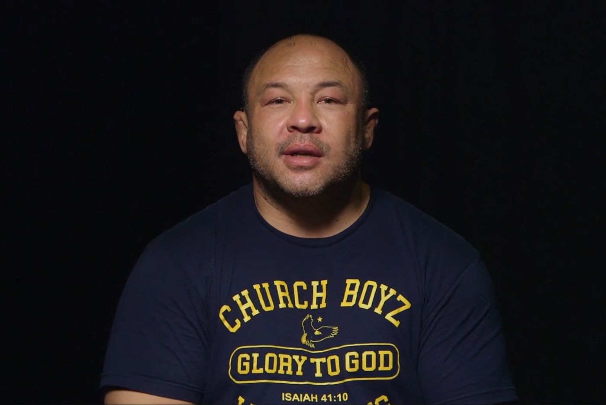
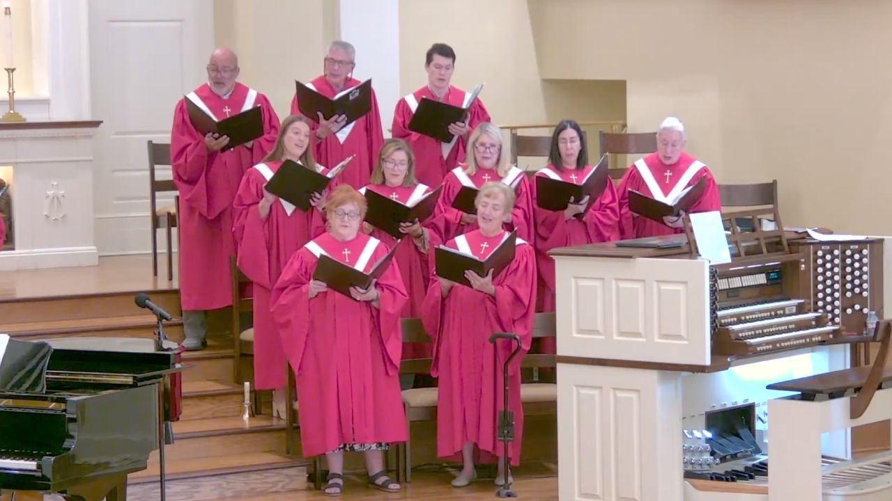

Christian News

Pope Leo XIV recovers in hospital after successful lung cancer surgery
The 71-year-old pontiff is walking and eating following an operation in Rome to remove a cancerous lung lobe.

Pope Leo XIV rests in Rome hospital following lung cancer surgery
Doctors removed part of the 71-year-old pontiff’s right lung during a 90-minute operation at Gemelli Hospital on Tuesday.

Pope Leo XIV to undergo surgery in Rome for lung nodule
The 71-year-old leader of the Catholic Church will enter hospital on Tuesday after doctors found a small lesion during a checkup.

Agyinasare cautions Ghanaians against culture of lies
The Christian leader says dishonesty has turned into a regular habit for many people across the country.

Davido praises John Mahama after church video goes viral
The Nigerian musician commended the Ghanaian leader’s humility after watching a trending video of him dancing in church.

Pope Leo XIV to undergo lung surgery in Rome
Catholic leader Pope Leo XIV confirms doctors caught a lung growth early and expects to recover within a week.

Salvation Ministries Begins Ghana Miracle Crusade 2026
Presiding Pastor David Ibiyeomie leads the opening session of the Ghana Miracle Crusade.

Minister Theophilus Sunday Holds Tarry Nyanya 2026 Day 1
Gospel minister Theophilus Sunday has hosted Day 1 of the Tarry Nyanya 2026 worship gathering.

Pastor Nathaniel Bassey Leads Day 5 of October 2026 Hallelujah Challenge
The virtual inter-denominational gathering brought believers together for an online session of spiritual edification and worship.

80,000 believers gather for prayer event at Texas stadium
Atlanta-based 2819 Church fills AT&T Stadium for its annual corporate prayer and worship gathering.

Calvary Chapel settles abuse lawsuit with former staff member for 12 million dollars
A California megachurch has agreed to the financial payout following allegations against a former pastor who denies wrongdoing.

Arkansas church choir sings Backstreet Boys song during worship service
A United Methodist church defends singing a 1999 pop hit during Sunday service after online criticism.

Pastor Jerry Eze leads NSPPD UK Prayer Conference 2026
Gospel artist Kaestrings joined Pastor Jerry Eze for a live worship session at the NSPPD United Kingdom Prayer Conference 2026.

Theophilus Sunday holds Day 2 of Tarry Nyanya 2026
Gospel minister Theophilus Sunday has hosted the second day of the Tarry Nyanya 2026 worship gathering.

Pastor Nathaniel Bassey Leads Day 3 of October 2026 Hallelujah Challenge
The inter-denominational virtual worship session focuses on edifying believers through music and the Holy Spirit.

Theophilus Sunday and 1Spirit Hold Day Two of Tarry Abuja
Gospel minister Theophilus Sunday and 1Spirit hosted the second day of the Tarry Abuja worship programme.

Ohemaa Mercy Ministries holds Tehillah 2025: The Revival Experience
Ohemaa Mercy Ministries hosted Tehillah 2025 at The Maker’s House Chapel for an evening of worship and the Word.

Pastor Nathaniel Bassey Leads Day 2 of October 2026 Hallelujah Challenge
Believers joined Pastor Nathaniel Bassey online for Day 2 of the Hallelujah Challenge worship gathering.

Cuban authorities arrest Protestant pastor over public prayer event
Human rights group Christian Solidarity Worldwide calls for the release of Maikel Pupo Velázquez while his teenage daughter remains in hospital.

Ghana hosts 10th World Assemblies of God Congress in Accra
More than 10,000 global delegates gather in Greater Accra as Africa hosts the church’s triennial world meeting for the first time.

Theophilus Sunday Hosts Day 2 of Tarry Abuja 2026
Day 2 of the Tarry Abuja 2026 gathering tagged Battle Axe has taken place.

Ohemaa Mercy Releases Live Worship Video ‘Songs Of Revival’
Gospel minister Ohemaa Mercy has released ‘Songs Of Revival,’ recorded live at Tehilla Experience 2025.

October 2026 Hallelujah Challenge Kicks Off with Day 1 Worship Session
Pastor Nathaniel Bassey leads believers in the opening session of the October 2026 virtual worship gathering.

Pepperdine University adopts new faith statement clarifying Christian beliefs
The California institution has detailed its theological positions on God, Scripture and grace following unanimous approval from its governing board.

Nigerian gospel singer Toluwanisings prompts prayers after death reports
Fans and Christian communities across West Africa offer prayers following unverified reports regarding gospel artist Toluwanisings.

Churches of all sizes can engage young adults, research indicates
Research covering over 11,000 assemblies indicates local fellowships can adopt realistic methods to engage younger generations despite negative trends.

West Bank Christian family flees Taybeh home after settler beheading threat
An advocacy group calls for international intervention after intimidation forces a Palestinian Christian family from their newly built Taybeh house.

Bishop Obinim denies arrest and threat claims as divorce dispute grows
The founder of International God’s Way Church has publicly rejected allegations that he threatened his estranged wife, gospel musician Florence Obinim.

Assemblies of God Leaders Visit President Mahama Ahead of World Congress
The church relocates its morning sessions in Accra to the Grand Arena as Ghana hosts the global gathering for the first time.

Erie Church Leaders Pledge Support After Grandfather Kills Eight Relatives
Faith leaders in Pennsylvania offer spiritual guidance following a house shooting that left nine people dead.

Saudi-born evangelist Ahmed Joktan urges Christians to share Gospel
Former Muslim Ahmed Joktan calls on believers to witness to their neighbors after experiencing a dream that transformed his life.

Christian Post Responds to Holy Post Over Christian Nationalism Claims
The conservative news outlet says it has offered critical commentary on the political Right for years.

Health concerns grow for jailed Chinese Pastor Wang Yi
Reports indicate the Early Rain Covenant Church leader suffers from late-stage liver cancer while officials arrest congregants.

US Archbishop Urges Catholic Soldiers To Refuse Firing Squad Execution Duty
Archbishop Timothy Broglio says Catholic military members must ask to be excused from the planned December 3 execution of Nidal Hasan.

Ghana offers diplomatic support for Assemblies of God world congress
Missions in 73 countries will assist international delegates arriving in Accra for the global gathering this week.

Christian leaders divided over plan to livestream Fort Hood shooter execution
Prominent pastors respond to Pentagon proposals to broadcast the firing squad execution of convicted killer Nidal Hasan.

Cabinet approves Ghana diplomatic agreement with Holy See
The host country agreement will go to Parliament to define formal relations and privileges for Catholic leaders.

Christian Post highlights key anniversaries in church history this week
The publication recalled major events including the founding of Willow Creek Community Church, the Knights Templar arrests and Henry Martyn’s death.

Jimmie Allen features on new Halfway 2 Jesus gospel album
International Business Times UK reported that a MAGA singer defended Eminem while launching a gospel music project featuring Jimmie Allen.

Presbyterian Church inducts Rev David Obli as Ga West Chairperson
The Moderator of the General Assembly has challenged the new leader to achieve ten per cent annual membership growth.

Pray.com launches AI sermon video service for pastors
Churches can now convert sermon messages into cinematic videos using artificial intelligence technology.

Ministers urge Kansas Senate candidate Adam Hamilton to drop out and repent
Clergy have publicly asked the United Methodist Church pastor to exit the race over his theological positions.

US police arrest pastor during prayer protest near Chinese embassy
The minister was demonstrating against the handling of minority faith groups in China when officers detained him in Washington.

Mahama clarifies ban on bus preaching applies only to moving vehicles
The president says religious activities remain lawful in stationary buses as government halts enforcement for consultations.
Services, crusades and conventions

 FLOW PRAYER MEETING WITH DAG HEWARD-MILLS| S13 • E19 | TUES 13TH OCT 2026Dag Heward-Mills
FLOW PRAYER MEETING WITH DAG HEWARD-MILLS| S13 • E19 | TUES 13TH OCT 2026Dag Heward-Mills ALPHA HOUR EPISODE 1441 || LORD USE ME FOR YOUR GLORY || WEDNESDAY OCTOBER 14TH, 2026Pastor Elvis Agyemang
ALPHA HOUR EPISODE 1441 || LORD USE ME FOR YOUR GLORY || WEDNESDAY OCTOBER 14TH, 2026Pastor Elvis Agyemang ALPHA HOUR EPISODE 1440 || LORD USE ME FOR YOUR GLORY || TUESDAY OCTOBER 13TH, 2026Alpha Hour with Pastor Elvis
ALPHA HOUR EPISODE 1440 || LORD USE ME FOR YOUR GLORY || TUESDAY OCTOBER 13TH, 2026Alpha Hour with Pastor Elvis Tell Them IV: What Shall I Do To Inherit Eternal Life? | Joshua Heward-MillsFirst Love Center (First Love Church)
Tell Them IV: What Shall I Do To Inherit Eternal Life? | Joshua Heward-MillsFirst Love Center (First Love Church) God Responds Swiftly || WORD TO GO with Pastor Mensa Otabil Episode 2350Pastor Mensa Otabil
God Responds Swiftly || WORD TO GO with Pastor Mensa Otabil Episode 2350Pastor Mensa Otabil Day 1 Evening of The Holy Ghost with Pastor Eastwood. Topic: The Holy Ghost And Man.Bishop Eastwood Anaba
Day 1 Evening of The Holy Ghost with Pastor Eastwood. Topic: The Holy Ghost And Man.Bishop Eastwood Anaba LIVE NOW | WAGF WORLD CONGRESS 2026 DAY 1: MORNING SESSION Watch the livestream now!AGTV Ghana
LIVE NOW | WAGF WORLD CONGRESS 2026 DAY 1: MORNING SESSION Watch the livestream now!AGTV Ghana REVIVAL 2026 WITH APOSTLE JOB AIDOO DAY 3....Prophet Dr. Kofi Oduro
REVIVAL 2026 WITH APOSTLE JOB AIDOO DAY 3....Prophet Dr. Kofi Oduro Virtual Prayer Night with The Chairman | 13.10.2026Pent TV
Virtual Prayer Night with The Chairman | 13.10.2026Pent TV Sunday Service [Live] with Pastor Mensa OtabilICGC Christ Temple
Sunday Service [Live] with Pastor Mensa OtabilICGC Christ Temple DAILY DEVOTION - Wednesday, 14th October 2026The Methodist Church Ghana
DAILY DEVOTION - Wednesday, 14th October 2026The Methodist Church Ghana SECOND SERVICE - SUNDAY SERVICE || 11th OCTOBERChrist Embassy Accra (CE Accra Online Church)
SECOND SERVICE - SUNDAY SERVICE || 11th OCTOBERChrist Embassy Accra (CE Accra Online Church) BREAKTHROUGH - COMMAND YOUR WEEK | OCTOBER 12 2026Archbishop Nicholas Duncan-Williams
BREAKTHROUGH - COMMAND YOUR WEEK | OCTOBER 12 2026Archbishop Nicholas Duncan-Williams How To Put Your Faith Into Action | Kakra Baiden | 13-10-2026Prophet Kakra Baiden
How To Put Your Faith Into Action | Kakra Baiden | 13-10-2026Prophet Kakra Baiden 🔴 LIVE | Convention Victory Parade and Praise Service | 11. 10. 26 | #COS2026Royalhouse Chapel (PowerlineTV)
🔴 LIVE | Convention Victory Parade and Praise Service | 11. 10. 26 | #COS2026Royalhouse Chapel (PowerlineTV) Western World & Asia Youth Prayer Movement (Youth Church Planting Initiative) | October 12, 2026The Church of Pentecost
Western World & Asia Youth Prayer Movement (Youth Church Planting Initiative) | October 12, 2026The Church of Pentecost Florence sacked from her Hse+ Obinim’s main Church seized +2 Apartments & house in Spain- Full VideoEkuonaba TV
Florence sacked from her Hse+ Obinim’s main Church seized +2 Apartments & house in Spain- Full VideoEkuonaba TV You will celebrate and enjoy the rest of the year!Archbishop Charles Agyinasare
You will celebrate and enjoy the rest of the year!Archbishop Charles Agyinasare Daily Capsules with Lady MercyLady Mercy Agyemang Elvis
Daily Capsules with Lady MercyLady Mercy Agyemang Elvis 11TH OCT. 26 | SUNDAY SERVICE @ THE POWER CATHEDRAL WITH PROPHET VICTOR KUSI BOATENGProphet Victor Kusi Boateng
11TH OCT. 26 | SUNDAY SERVICE @ THE POWER CATHEDRAL WITH PROPHET VICTOR KUSI BOATENGProphet Victor Kusi Boateng